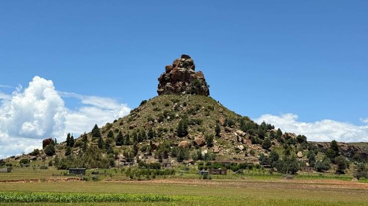

Protect nature
Keep the mountains and rivers clean, follow marked paths and respect wildlife.
A mountainious country rich in water, Herbs, rare plant species, a beautiful culture and magnificent history.

Lesotho is a small country in Africa, surrounded by South Africa. It's high altitude gives it dramatic mountain scenery, and cool highlands.
The Basotho people are known for their cultural traditions, hospitality, colourful blankets, traditional hats called mokorotlo, music and culture.
As tourists you are given a chance to enjoy the Lesotho nature while learning about it's traditions and supporting it's communities.
Keep the mountains and rivers clean, follow marked paths and respect wildlife.
Ask permission before photographing people and respect local customs and sacred places.
Choose local guides, buy locally made crafts and support community-owned businesses.